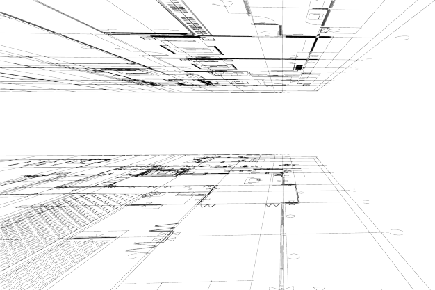

FOUNDING PHILOSOPHY
At ThetArchitecture Lab, we believe that architecture should speak to the soul through its purity and clarity. Our journey began with the vision of creating spaces that inspire introspection and elevate the human experience. Drawing inspiration from the timeless principles of minimalism, we embarked on a mission to craft environments that nurture tranquility and offer respite from the chaos of modern life.
MATERIAL PALETTE
Our material palette is a carefully curated selection of elements that speak to the essence of minimalism. Neutral colors dominate, creating a serene backdrop against which textures and forms take center stage. The interplay of materials, from raw concrete to tactile wood, from sleek metals to soft fabrics, evokes a sensory experience that is both comforting and stimulating.
DESIGN ETHOS
Our design ethos is rooted in the notion that less truly is more. Every project is approached with an open canvas, and each brushstroke of design is thoughtfully placed to create a symphony of simplicity. We understand that every line, every surface, and every material selection carries the potential to influence emotions and interactions. Thus, our designs are marked by clean lines, uncluttered spaces, and a meticulous selection of materials that resonate with the core of minimalism.
FUNCTIONALITY AS AN ART FORM
Minimalistic design is more than just aesthetics; it's about reimagining functionality. Our team of visionary architects approaches each project with an acute understanding of the user's needs and aspirations. We transform spaces into efficient, organized, and purposeful realms, where every element has its place and every detail serves a function. This approach not only enhances usability but also elevates the overall aesthetic of the space.
Team:
Principal Architect: Preetha G
Academics:
• B.Arch: PES Univeristy (2020 - 2025)
• M.Arch: Univeristy College London (2026 - 2032)
Work experience:
• Between Spaces (2025 - 2026)
• Nikki Thomas Architects (2028 - 2032)
Senior Architect: Ar. X• B.Arch: PES Univeristy (2020 - 2025)
• M.Arch: Univeristy College London (2026 - 2032)
Work experience:
• Between Spaces (2025 - 2026)
• Nikki Thomas Architects (2028 - 2032)
Junior Architect: Ar. Y